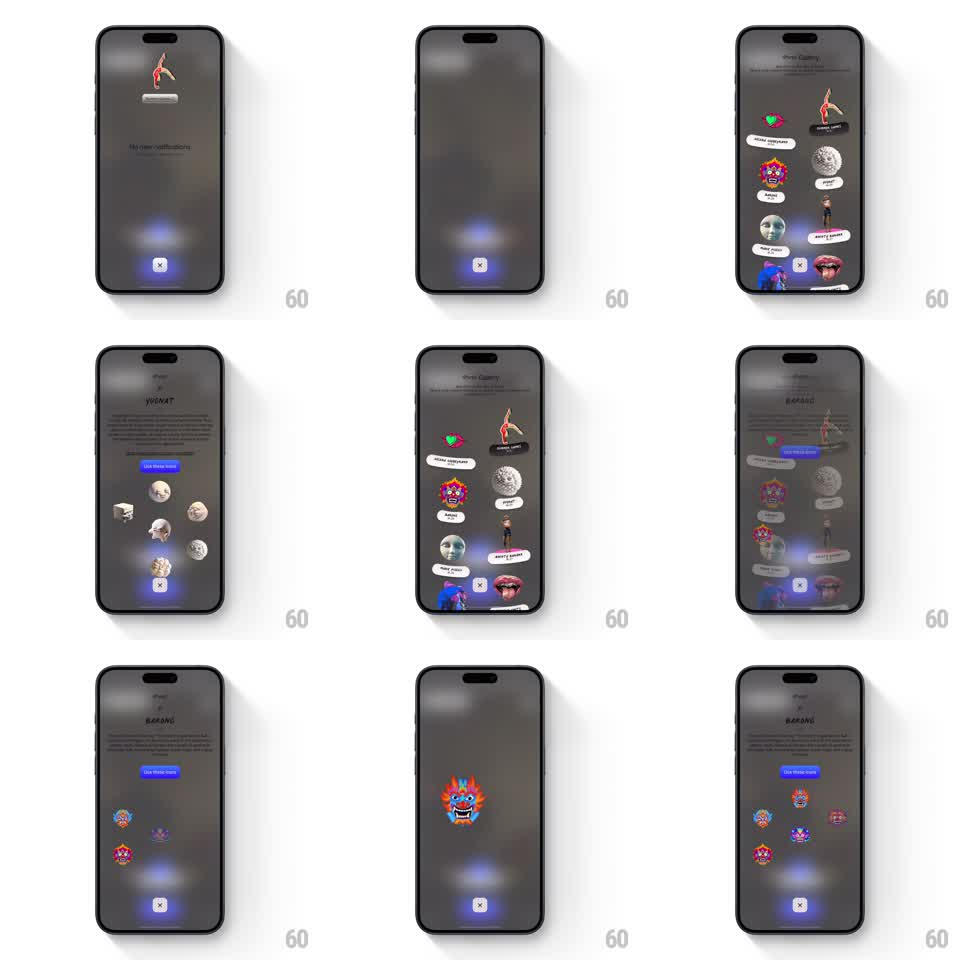

Media
Frame-by-frame

Rebuild this interaction 1:1: Tilt's notification gallery - a dark gallery of artist icons that scatter with springy physics on entry, each tappable into an interactive 3D showcase.

Rebuild this interaction 1:1: Tilt's notification gallery - a dark gallery of artist icons that scatter with springy physics on entry, each tappable into an interactive 3D showcase. ## Integration Integration: stack-agnostic spec - springs given as stiffness/damping, timed motions as duration + curve; map every value to your framework and animation library of choice. ## Scene Dark-themed gallery screen. A loose constellation of circular artist icons floats on the canvas, each with a soft glow. Icons drift gently at idle; on entry they scatter outward from center with spring physics. Tapping one lifts it into a 3D-tilting preview. ## Motion spec Pattern: springy scatter constellation + 3D tilt preview. - Entry: icons spawn at center and scatter outward to their resting positions (spring stiffness ~200, damping ~18, randomized target offsets), slight rotation during travel, glow fading in last. - Idle: each icon floats on its own slow orbit (translate +-6px, rotate +-3deg, 4-7s periods, phase-offset). - Drag an icon: it follows 1:1 with stretch; release snaps it back with an overshooting spring (stiffness ~300, damping ~16) that wobbles twice before rest; nearby icons get pushed aside briefly (repulsion falloff ~120px). - Tap: the icon scales up (~1.6x, spring ~320/24) and tilts in 3D toward the touch point (rotateX/Y up to 15deg) with a specular sweep; the rest of the gallery dims and blurs (200ms). - Dismiss: reverse - the icon drops back into its constellation slot, blur lifts. ## Calibration - Scatter targets are deterministic per icon (stable layout) - only the paths feel random. - The constellation never overlaps the header; resting positions respect a safe frame. ## Reduced motion Icons fade into a static grid; tap opens a flat preview. ## Don't miss - Icons are circular with varied art and ring colors - uniform placeholders kill the gallery feel. - The dim/blur behind a preview is what makes the 3D tilt read as depth; don't skip it.